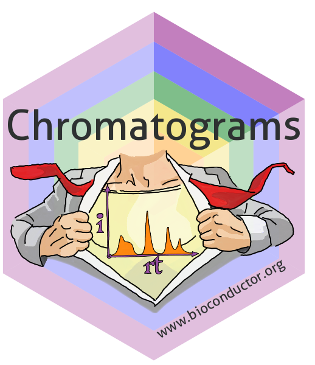

Convert a chromatogram object to a data.frame.
Source:R/helpers.R
as.data.frame.Chromatograms.RdReturns a data.frame in long format with one row per data point and
columns rtime, intensity and index. index is a factor with the
position of the chromatogram within x (seq_along(x)) and uniquely
identifies each chromatogram.
To add additional chromatogram variables (e.g. "mz") request them through
the chromVariables parameter.
Usage
# S3 method for class 'Chromatograms'
as.data.frame(
x,
row.names = NULL,
optional = FALSE,
chromVariables = character(),
...
)Arguments
- x
Chromatograms object.
- row.names
optional row names for the returned
data.frame. Must be equal to the number of rows in the returneddata.frame.- optional
currently ignored; present for consistency with the base generic.
- chromVariables
characterwith the names of additional chromatogram variables (available inchromVariables(x)) to be added as columns fromchromData(x).- ...
currently ignored.